Sakaimachi, Ibaraki: things to do, food and stays
Sakaimachi · Ibaraki
Sakaimachi
Highlighted on the Ibaraki map.

Stay
ＨＯＴＥＬ Ｒ９ Ｔｈｅ Ｙａｒｄ 境
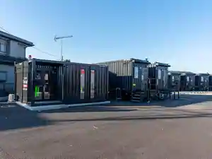
HOTEL R9 The Yard Sakai
御老公の湯 境店
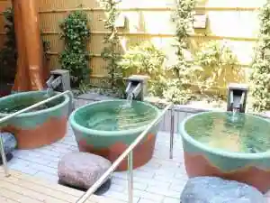
O Roko No Yu Sakai
Inn in Sakaimachi with a sauna.
ALOHA GLAMPING RESORT SAKAI
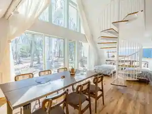
ALOHA GLAMPING RESORT SAKAI
Dining
中華そば ふじ野
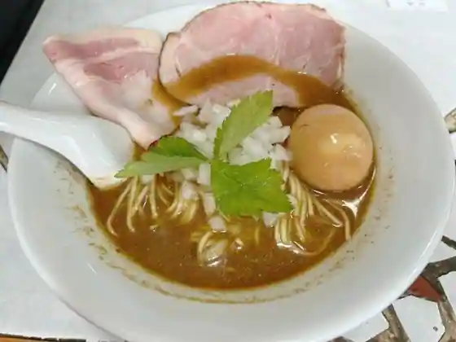
Chuka Soba Fuji No
蕎楽
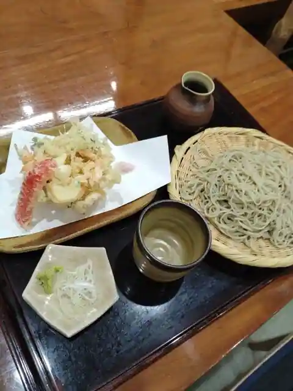
Kyo Raku
ラーメンショップ 境店
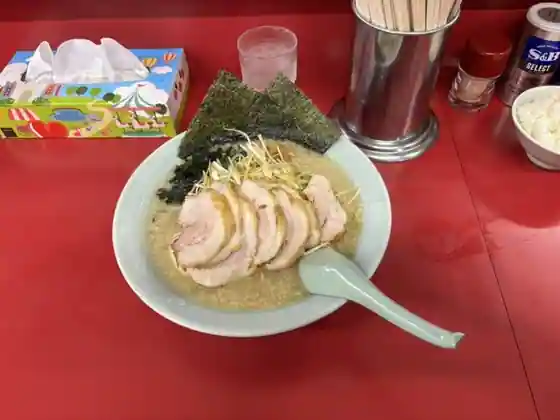
Ramen Shoppu Sakai
廻転鮨 銀座おのでら 境町店
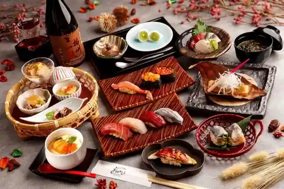
Kaiten Sushi Ginza Onodera Sakaimachi
BORDERTOWN
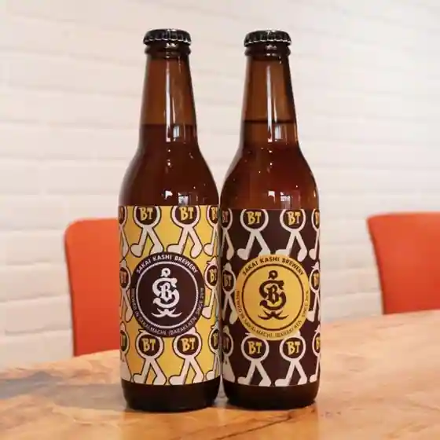
BORDERTOWN
さかいサンド
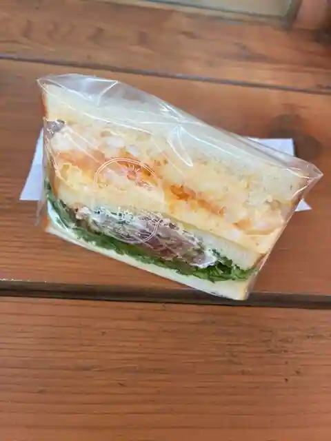
Sakai Sando
境逸品 鶏そば 山田屋
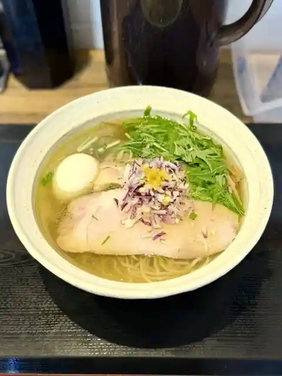
Sakai Ippin Niwatori Soba Yamada Ya
レストランくいな 境店
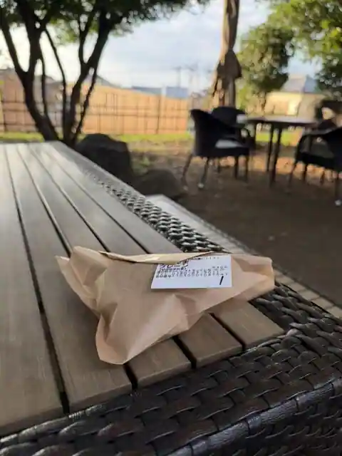
Restaurant Kuina Sakai
登龍
Toryu
ラーメンショップ 塚崎店
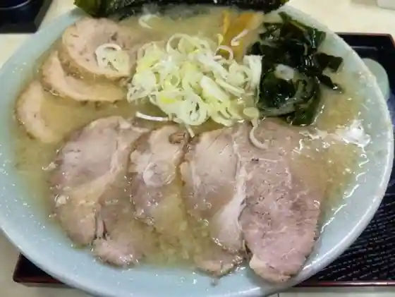
Ramen Shoppu Tsukazaki
幌馬車
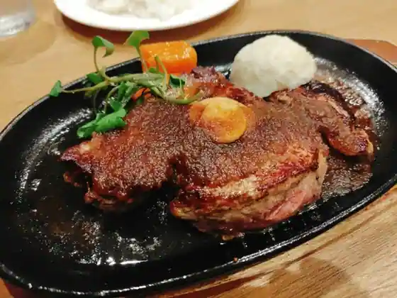
Horobasha
SHED
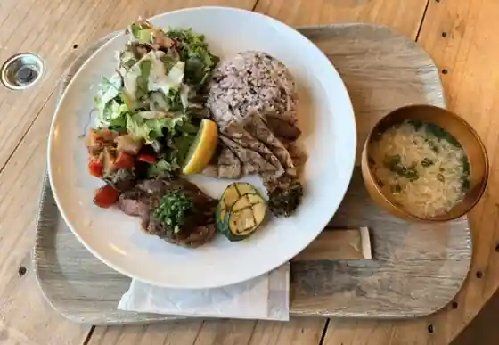
SHED
HOSHIIMONO100Cafe
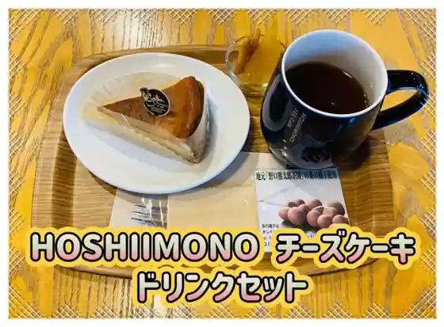
HOSHIIMONO100Cafe
道の駅 さかい
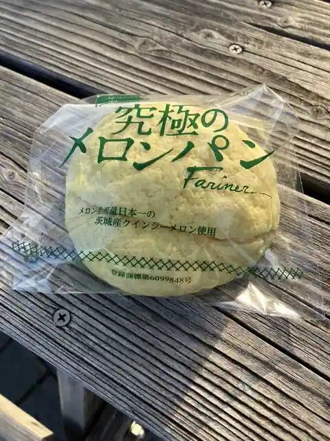
Michi No Eki Sakai
大塚屋食堂
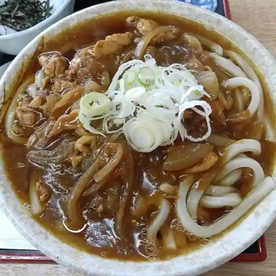
Otsuka Ya Shokudo
三好食堂
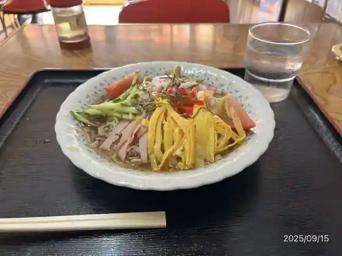
Miyoshi Shokudo
大はし食堂
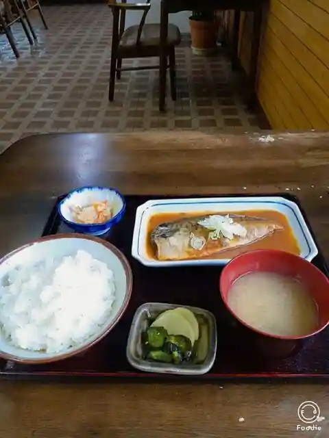
Dai Hashi Shokudo
パンジャビ ダバ
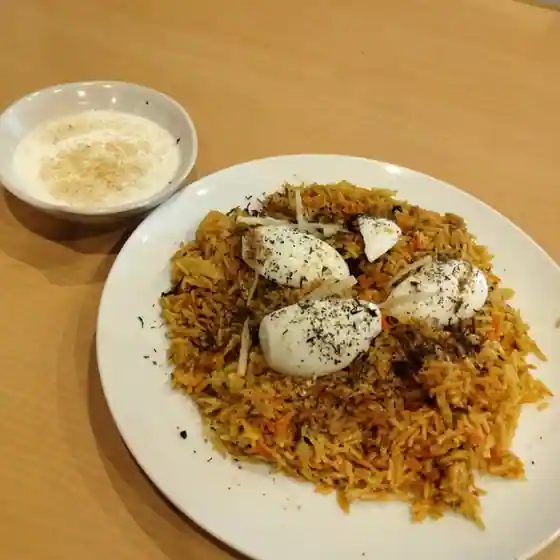
Bakery Jabi Daba
天吉
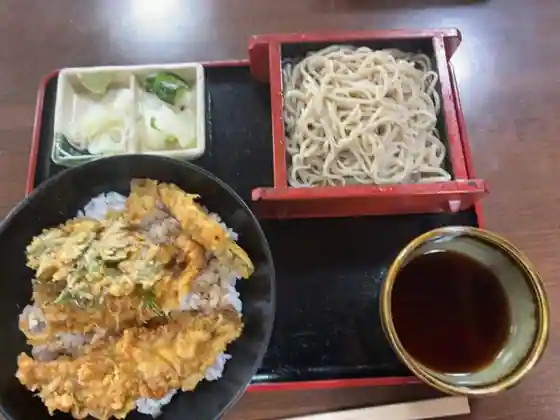
Kichi
欧風料理 クラコフ
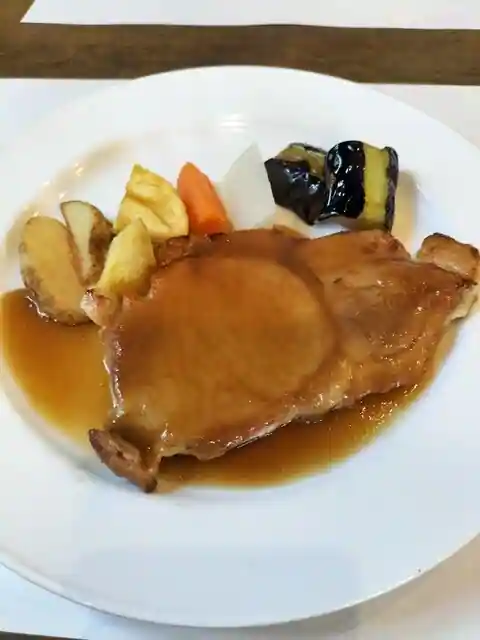
Ofu Ryori Kurakofu
いのせ食堂
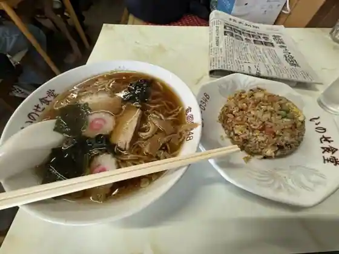
Inose Shokudo
境香
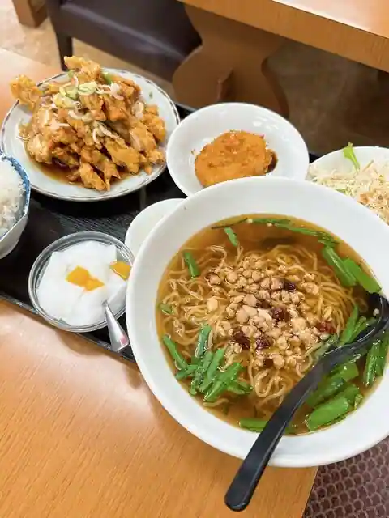
Sakai Kaori
8代葵カフェ ハワイ境店
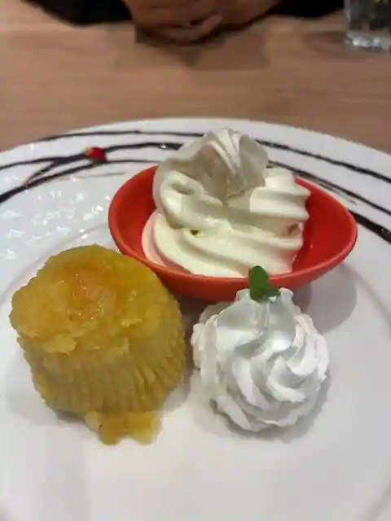
8 Dai Aoi Cafe Hawai Sakai
Sights
Roadside Station Sakai

Ibaraki Hyakkei Memorial Park
Sakaimachi Folk History Museum

Kofu Takashi Ro

Chataro ’s cafe Yama no

Ichigo Marushie
S-Gallery